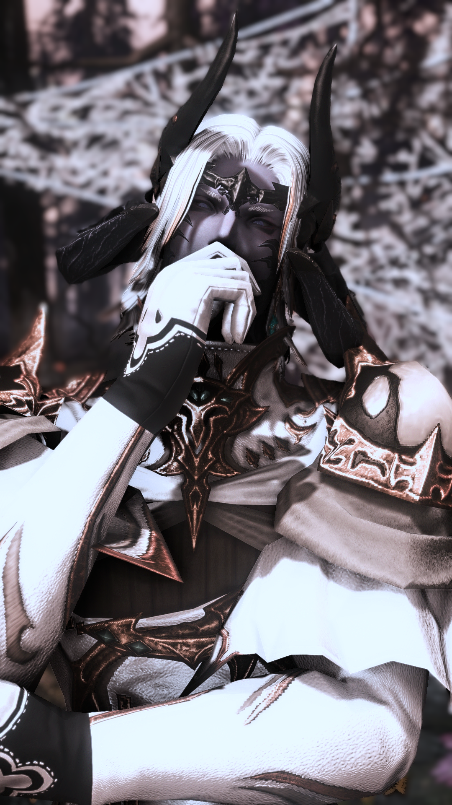
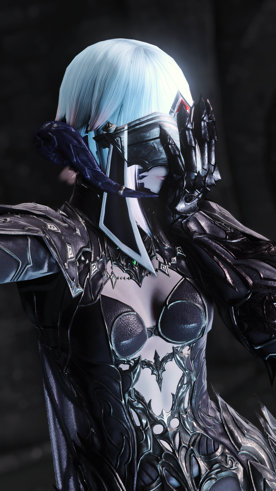
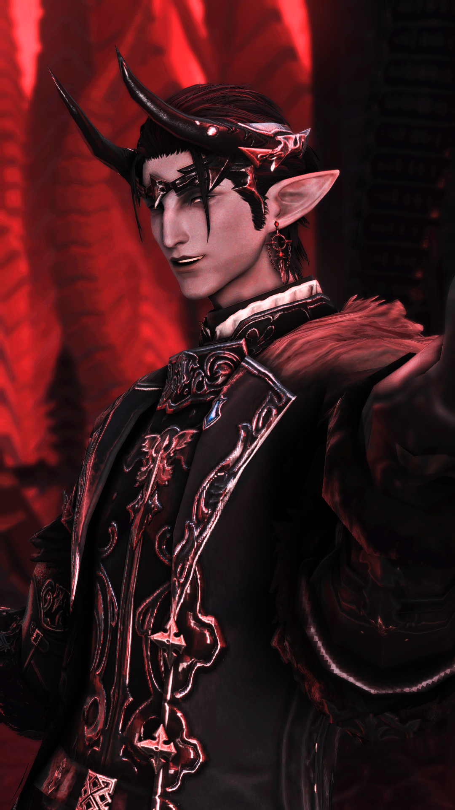

侍者

司祭

監禮者



外表是暮暉之民男性。白金相間的頭髮、紫色的皮膚，也許最引人注目的是那雙熱切的眼睛。這副皮囊似曾相識。

大多時間外型為敖龍族暮輝之民女性，雙目失明，依靠觀測乙太的方式模糊的辨別周遭環境，熱衷觀測各種生物的乙太。

生前為精靈族男性，死後化作妖異也維持著一樣的外貌。容易被人類豐沛的情感所吸引，不分善惡都會讓他好奇。
注意：對於喜愛之人可能會產生佔有的慾望偏執，接觸者需注意自身安全。
親密～暗示及擦邊。
喜歡潮濕的地方、金閃閃的寶物、寶石；對氣味和聲音很敏感，會跟著金子落地的聲音起舞。厭惡受到羞辱，有可能激怒乙太體。
一切看心情行事。由於受到絕望浸染，很容易放棄；偶爾會出現原因不明的遲鈍。
暫不提供
一般～親密。
喜歡閱讀、聆聽故事，不喜歡吵鬧的環境。
雖然能夠靠乙太辨識大致方位但還是時常在室內迷路。
暫不提供
一般～暗示。
格外喜歡會分享喜怒哀樂的人類。討厭不守規矩、不懂尊重的人類。
喜歡美酒與美食，來者不拒。
暫不提供


使 徒 名 冊
此冊記載著Elysium諸位使徒的資料。
請留下您的署名，方可翻閱。